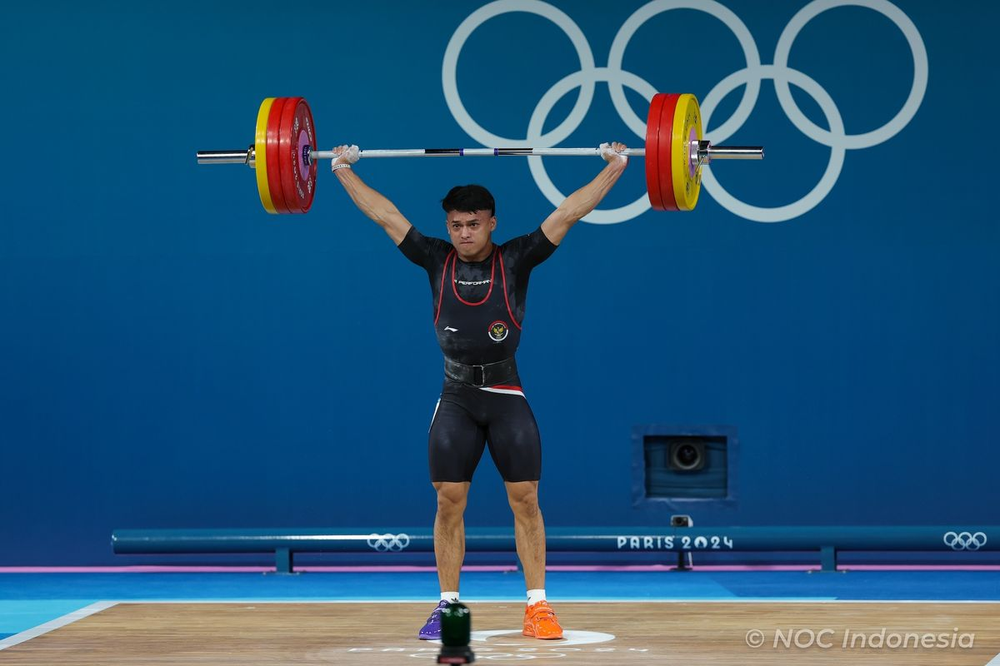

Jadwal Final Ganda Putri Olimpiade Paris 2024: Emas China dari Duel Chen/Jia vs Liu/Tan
Lifestyle Author
Monday, 12 Aug 2024 12:00 WIB

Rizki Juniansyah adalah atlet angkat besi putra yang meraih medali emas pada Olimpiade Paris 2024. Tidak hanya menjadi perbincangan karena prestasinya yang dapat meraih emas di Olimpiade.
Rizki Juniansyah juga jadi perbincangan karena menggunakan sepatu berbeda warna di South Paris Arena 6, Paris, Prancis.
Rizki terllihat menggunakan sepatu kanan berwarna biru dan sepatu kiri berwarna jingga ketika melakukan angkatan snatch dan clean & jerk.
Hal tersebut banyak menuai pertanyaan mengapa Rizki Juniansyah pakai sepatu warna berbeda.
Apakah termasuk Gerakan Two Different Colored Shoes?
Memakai sepatu dengan warna yang berbeda kerap dikaitkan dengan gerakan Two Different Colored Shoes.
Different Colored Shoes adalah gerakan yang digagas oleh Dr. Arlene Kaiser untuk merayakan keragaman manusia.
Dilansir dari Days of The Year, gerakan Two Different Colored Shoes merayakan individualitas seseorang untuk menunjukkan bahwa setiap orang beragam dan berbeda.
Menurut seorang fashion designer terkemuka, Musa Widyatmodjo "Bisa diartikan sebagai apa saja, namun menurut saya itu adalah wujud dari kreativitas penunjang penampilan supaya terlihat unik dan berbeda" ujarnya ketika dikonfirmasi oleh Kompas.com, Sabtu (10/8/24).
Sehingga, alasan menggunakkan sepatu dengan warna berbeda bisa saja diartikan sebagai apa saja tidak harus selalu merupakan gerakan Two Different Colored Shoes.
Sepatu warna berbeda menunjukkan individualitas
"Dalam berpenampilan ada dua unsur. Yang pertama adalah unsur yang sesuai dengan pakem dan yang kedua ada unsur yang sesuai kebebasan berekspkesi" Ujar Musa pada Kompas.com.
Kebebasan berekspresi adalah hal-hal yang tidak terikat dengan peraturan.
Menggunakan sepatu dengan warna berbeda seperti yang dilakukan Rizki Juniansyah adalah bentuk kebebasan berekspresi.
"Menurut saya itu adalah fashion statement atau pernyataan mode" ketika ditanyai oleh Kompas.com.
Menurut beliau, sepatu berwarna berbeda dapat menunjukkan individualitas seseorang.
"Sepatu dengan warna berbeda bisa dibilang menunjukkan individualitas karena tidak semua orang berani melakukan itu." Ujarnya pada Kompas.com.
Sehingga, sepatu yang berbeda warna memiliki makna menunjukkan individualitas dan keberanian mengekspresikan diri.
Warna berbeda menunjukkan bahwa setiap individu adalah unik, memiliki 'warna' dan kepribadiannya masing-masing.
Comments
Comments List
No comments yet. Be the first to post a comment!